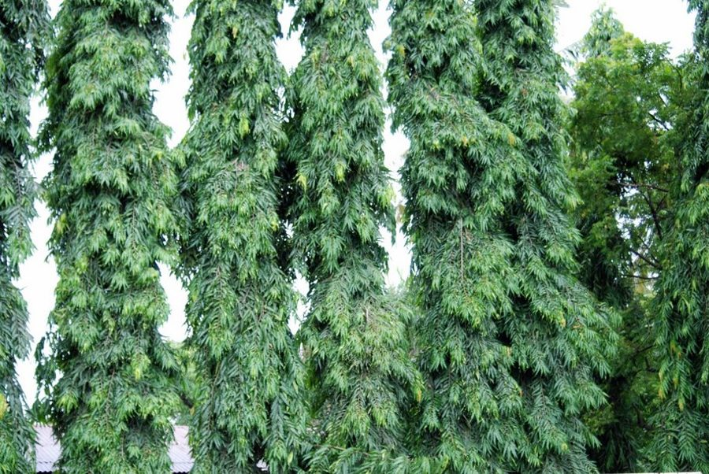

अशोक (नकली)False Ashoka
Monoon longifolium · Annonaceae · FLR-0156

- Scientific nameवैज्ञानिक नाम
- Monoon longifolium (Sonn.) Thwaites
- Familyकुल
- Annonaceae
- Hindiहिंदी
- अशोक (नकली)
- Local namesस्थानीय नाम
- false ashoka, ashok, nakli ashok, debdaru, mast tree
- Status hereयहाँ की स्थिति
- cultivated
- Movementआवागमन
- Resident, here all year
- IUCNIUCN
- not evaluated
- Reviewसमीक्षा
- audited and independently read
When to look कब देखें
Present all year.साल भर मौजूद।
Uses and possibilities उपयोग और संभावनाएँ
Drawn from the documented uses in the profile below, where each is labelled traditional, current or a research lead. All uses →
Tell it apart from इनसे अलग पहचानें
अशोक (नकली) / False Ashoka
Monoon longifolium (Sonn.) Thwaites — Annonaceae
अशोक (नकली) — मंदिर के बाग़ों में असली अशोक के साथ लगाया जाने वाला पेड़, जो देखने में उसकी तरह दिखता है पर एक अलग ही पेड़ है। पत्तियाँ लंबी, चिकनी, हरी। फूल पीले, सुगंधित। फल छोटे, समूहों में लगते हैं। मंदिरों और पूजा में इसे पवित्र माना जाता है और अशोक के साथ-साथ पूजा की जाती है।
Quick Identification त्वरित पहचान
| Feature | Description |
|---|---|
| Size | Evergreen to semi-evergreen tree, 8–15 m tall, with a dense, spreading crown |
| Leaves | Alternate, simple, lanceolate to oblong-lanceolate, 10–20 cm, glossy green, entire margins |
| Flowers | Small, yellow or pale yellow, fragrant, in clusters (fascicles) in the axils, January–March |
| Fruit | Cluster of small ovoid berries, 2–3 cm, smooth, greenish-yellow ripening to orange |
| Bark | Grey to dark grey, smooth becoming furrowed with age |
| The test | Crush a leaf; the scent is pleasant and distinctive |
Field tip: Look in temple gardens for a tree with glossy, long leaves and fragrant yellow flowers in the cool season. The small clustered fruits appear in early summer. It is often confused with ashoka but is a different tree entirely.
हिंदी — कैसे पहचानें: लंबी, चिकनी, हरी पत्तियाँ। सर्दियों में पीले, सुगंधित फूल। फल छोटे, नारंगी। मंदिर के बाग़ों में आम दिखता है।
Morphology आकारिकी
Biometrics (cultivated trees, northern Indian gardens):
| Measurement | Range |
|---|---|
| Height | 8–15 m |
| Trunk diameter | 30–80 cm |
| Leaf length | 10–20 cm |
| Leaf width | 2–5 cm |
| Flower diameter | 1–2 cm |
| Fruit diameter | 2–3 cm |
Trunk and bark: Grey, smooth when young, becoming furrowed and scaly with age. Wood pale, moderately hard.
Leaves: Alternate, simple, lanceolate to oblong-lanceolate, tapering to both ends, entire, glossy green above, paler beneath, with a slender petiole.
Flowers: Small, yellow to pale yellow, fragrant, with six petals, arranged in axillary fascicles. Pollinated by insects.
Fruit: A collection of small, distinct, smooth berries, 2–3 cm in diameter, greenish-yellow ripening to orange, arising from a single flower.
हिंदी: पत्ती एक ही टुकड़े की, लंबी और नुकीली। फूल पीले, सुगंधित, हल्के। फल छोटे, नारंगी, गुच्छों में।
Behaviour & Ecology व्यवहार और पारिस्थितिकी
A tree of tropical gardens and sacred groves, native to south India and Sri Lanka but widely cultivated northward, including in temples of the Indo-Gangetic plain. It grows best in warm, well-drained soils and is tolerant of cultivation. The flowers are fragrant and visited by insects in the cool season. The small fruits are taken by birds and monkeys, dispersing the seeds to nearby trees and gardens.
The tree is valued primarily for its ornamental foliage and fragrant flowers, and secondarily for its association with the more famous ashoka in religious contexts.
हिंदी: दक्षिण भारत का पेड़ है, पर अब मंदिरों में उत्तर तक पाया जाता है। गर्म जमीन पसंद करता है। कीटों द्वारा परागण। फल चिड़ियों और बंदरों को भाते हैं।
Life Cycle / Phenology जीवन चक्र
| Month / season | Event |
|---|---|
| January–March | Flowering, peak in February |
| April–May | Fruit sets and begins swelling |
| June–July | Fruit ripens yellow to orange |
| August–September | Fruit falls or is eaten; new growth after rains |
| 5–7 years from seed | First flowering |
Seeds are best sown fresh. Lifespan runs to 50–100 years.
हिंदी: जनवरी-मार्च में फूल। गर्मी में फल पकते हैं। 5-7 साल में फूल आता है।
Associated Species / Interactions संबंधित प्रजातियाँ
- Pollinators: Small insects and bees visit the flowers.
- Frugivores: Birds and monkeys feed on and disperse the fruit.
- Temple companions: planted alongside true ashoka in sacred groves.
Pests and Diseases कीट और रोग
- Leaf-eating beetles and caterpillars in the monsoon, rarely serious.
- Scale insects on branches.
- No significant fungal diseases in semi-dry cultivation.
Agricultural / Human Relevance कृषि प्रासंगिकता
Traditional and Sacred Use (documented uses):
- Sacred plant. The tree is planted in temples and considered sacred in many Hindu traditions. It is valued for its ornamental foliage and fragrant flowers in the cool season.
- Companion to ashoka. Because it resembles the sacred ashoka, it is sometimes confused with or planted alongside it in religious contexts.
Today. Grown as an ornamental in temple gardens and private estates for its glossy foliage and fragrant flowers.
Research direction (a lead, not a result). The ethnobotany and temple ecology of false ashoka plantations in the Indo-Gangetic plain would benefit from documentation.
हिंदी: मंदिर में पूजा का पेड़ माना जाता है। सजावट के लिए बगीचों में लगाया जाता है। फूल सुगंधित।
Expected Locally स्थानीय रूप से अपेक्षित
Not a field record. Written from published accounts for eastern Uttar Pradesh. No confirmed local sighting yet — if you have seen it, that is what the atlas needs.
अभी तक स्थानीय पुष्टि नहीं। यह विवरण प्रकाशित स्रोतों से है, किसी अवलोकन से नहीं।
To be expected in temple gardens and cultivated settings, particularly near sacred groves. It is not wild. Any tree found is worth recording because planting records can shed light on the temple history.
Distribution वितरण
Global range: Native to the Western Ghats and Sri Lanka; widely cultivated in gardens across tropical Asia.
In India: Distributed in temple gardens and ornamental settings, particularly from Rajasthan through the Indo-Gangetic plain to Assam.
In Uttar Pradesh: Cultivated in temple grounds and gardens, especially in older sacred groves.
In Basti district / eastern UP: Occasional in temple gardens.
Research Questions शोध प्रश्न
Anyone can investigate these | कोई भी इन प्रश्नों की जाँच कर सकता है
- Which insects visit the yellow flowers, and at what time of day? — Observe a flowering tree for 30 minutes in February.
- Do birds or monkeys actually eat the fruits in your area, or do they ripen and fall? — Watch a fruiting tree in June–July.
- How long do the flowers stay fragrant through the day, and when do they smell strongest? / फूल की सुगंध दिन भर कब तक रहती है? — Smell the flowers at different times.
- Is the tree only planted in temples, or do households also grow it? / क्या यह पेड़ सिर्फ़ मंदिर में है या घरों में भी है? — Walk the village and ask residents.
- How many trees are in your nearest temple garden, and how old are they? — Document each tree.
Similar Species मिलती-जुलती प्रजातियाँ
| Species | How to tell apart | हिंदी | |
|---|---|---|---|
| True ashoka (Saraca asoca) | Leaves pinnate with leaflets; flowers orange-red, not yellow; planted in same temples | सीता अशोक — पंखनुमा पत्ती, नारंगी फूल | |
| [[kachnar\ | Kachnar]] (Bauhinia variegata) | Leaves bilobed; flowers pink, larger; fruit a flat pod | कचनार — दो भागों की पत्ती, गुलाबी फूल |
| [[amaltas\ | Golden shower]] (Cassia fistula) | Leaves pinnate; flowers bright yellow, pendulous; fruit a long black pod | अमलतास — पीले फूल, लंबी फली |
Field rule: A tree with simple, glossy, lanceolate leaves, fragrant yellow flowers in the cool season, and small clustered orange fruits, planted in a temple garden, is false ashoka.
Taxonomy & Classification वर्गीकरण
Original description. Described by Thwaites in 1860 in Enumeratio Plantarum Zeylanicum, based on specimens from Sri Lanka. The epithet longifolium refers to the long leaves.
Subspecies. Monotypic — no subspecies are currently recognised.
Family and order placement. Annonaceae, the custard apple family, in the order Magnoliales. The genus Monoon holds several tropical Asian species.
Phylogenetic notes. Monoon longifolium is closely related to other Annonaceae genera of southern India and Sri Lanka.
IUCN status rationale. Not evaluated. Cultivated widely in gardens.
Photo Gallery फोटो गैलरी
Photos needed आवश्यक फोटो
- [ ] Whole tree in a temple garden (पूरा पेड़)
- [ ] Glossy green leaves (पत्तियाँ)
- [ ] Yellow fragrant flowers (फूल)
- [ ] Small clustered fruits (फल)
No photos yet — add field photos to media/species/false_ashoka/ and run node scripts/sync_photos.js.
References संदर्भ
- Thwaites, G.H.K. (1860). Enumeratio Plantarum Zeylanicum, p. 15. Government Printing, Colombo. [original description]
- Hooker, J.D. (1872). The Flora of British India, vol. 1. L. Reeve, London. (Monoon)
- Kirtikar, K.R. & Basu, B.D. (1935). Indian Medicinal Plants, 2nd ed., vol. 1. Lalit Mohan Basu, Allahabad.
- Duthie, J.F. (1903). Flora of the Upper Gangetic Plain and of the Adjacent Siwalik and Sub-Himalayan Tracts. Government Printing, Calcutta.
- Nair, K.R. & Chowdhury, J.B. (1985). Sacred groves of India: A need for scientific documentation. Indian Forester 111(7): 531–539.
- GBIF Occurrence Data — Monoon longifolium, India (2026).
Source file: species/flora/trees/false_ashoka.md